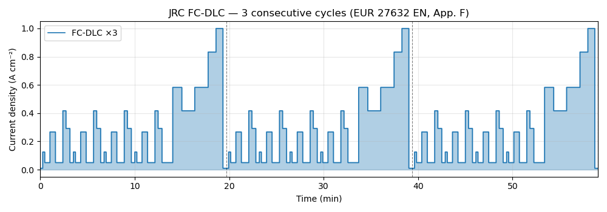
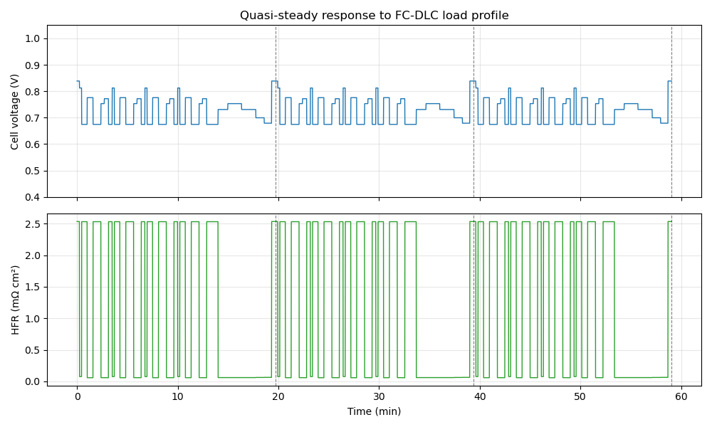
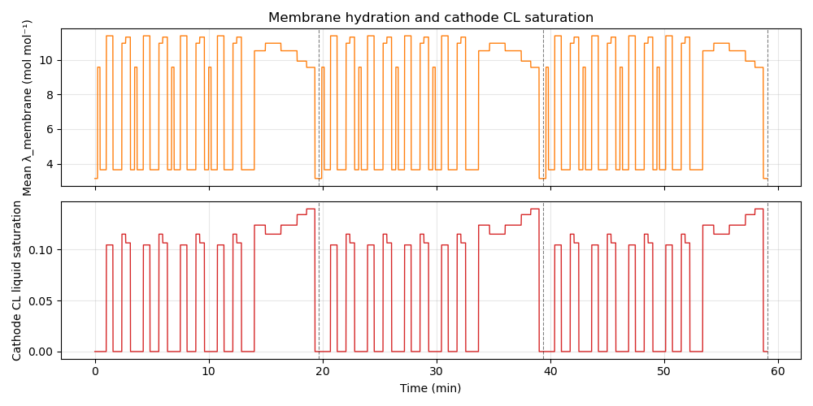

Note
Go to the end to download the full example code.
Quasi-steady simulation — FC-DLC profile#
The Fuel Cell Dynamic Load Cycle (FC-DLC) is the JRC/FCH-JU standard load profile for PEMFC endurance testing (Tsotridis et al., EUR 27632 EN, 2015, Appendix F). It is derived from the New European Driving Cycle (NEDC) and consists of 35 piecewise-constant steps covering 1181 s, including four urban sub-cycles and one extra-urban sub-cycle.
A quasi-steady simulation treats each time step as an independent steady-state
point: all steps are packed into a single vectorised
CellConditions array and evaluated
in one call — no Python loop required.
This example runs 3 consecutive FC-DLC cycles under JRC automotive reference conditions (Tsotridis et al. 2015, Table 1):
Cell temperature: 80 °C
Cathode: 230 kPa, 30 % RH, λ = 1.5 (air)
Anode: 250 kPa, 50 % RH, λ = 1.3 (H₂)
Reference#
Tsotridis G. et al., “EU Harmonised Test Protocols for PEMFC MEA Testing in Single Cell Configuration for Automotive Applications”, JRC Science for Policy Report EUR 27632 EN, doi:10.2790/54653 (2015).
FC-DLC profile definition#
The 35 test-point table from Appendix F, Table F.1. Load values are given as a percentage of the maximum current density (defined at 0.65 V on the polarisation curve). Here we set I_MAX = 1.0 A cm⁻² = 10 000 A m⁻².
import numpy as np
import matplotlib.pyplot as plt
import marapendi as mrpd
# FC-DLC step table: columns [start_time_s, dwell_s, load_%]
_FC_DLC = np.array([
[0, 15, 0.0 ],
[15, 13, 12.5 ],
[28, 33, 5.0 ],
[61, 35, 26.7 ],
[96, 47, 5.0 ],
[143, 20, 41.7 ],
[163, 25, 29.2 ],
[188, 22, 5.0 ],
[210, 13, 12.5 ],
[223, 33, 5.0 ],
[256, 35, 26.7 ],
[291, 47, 5.0 ],
[338, 20, 41.7 ],
[358, 25, 29.2 ],
[383, 22, 5.0 ],
[405, 13, 12.5 ],
[418, 33, 5.0 ],
[451, 35, 26.7 ],
[486, 47, 5.0 ],
[533, 20, 41.7 ],
[553, 25, 29.2 ],
[578, 22, 5.0 ],
[600, 13, 12.5 ],
[613, 33, 5.0 ],
[646, 35, 26.7 ],
[681, 47, 5.0 ],
[728, 20, 41.7 ],
[748, 25, 29.2 ],
[773, 68, 5.0 ],
[841, 58, 58.3 ],
[899, 82, 41.7 ],
[981, 85, 58.3 ],
[1066, 50, 83.3 ],
[1116, 44, 100.0],
[1160, 21, 0.0 ],
])
CYCLE_DURATION = 1181 # s — total cycle duration
I_MAX = 10_000. # A m⁻² (= 1.0 A cm⁻² at 0.65 V)
I_MIN_FLOW = 2_000. # A m⁻² (= 0.2 A cm⁻², minimum flow stoichiometry, JRC §2.2)
I_MIN_SIM = 100. # A m⁻² (replaces 0 % OCV steps to avoid division-by-zero)
def fc_dlc_current(t_s, i_max=I_MAX):
"""Return FC-DLC current density (A m⁻²) at time *t_s* (seconds)."""
t_mod = t_s % CYCLE_DURATION
idx = np.searchsorted(_FC_DLC[:, 0], t_mod, side='right') - 1
idx = np.clip(idx, 0, len(_FC_DLC) - 1)
pct = _FC_DLC[idx, 2]
return np.maximum(pct / 100.0 * i_max, I_MIN_SIM)
Discretise 3 FC-DLC cycles at 1 Hz#
N_CYCLES = 3
T_TOTAL = N_CYCLES * CYCLE_DURATION # s
t_arr = np.arange(0, T_TOTAL, 1.0) # 1 s steps
i_arr = fc_dlc_current(t_arr) # A m⁻²
# Stoichiometry clamped to minimum flow (JRC §2.2 and §2.3)
st_ca = 1.5 * np.maximum(I_MIN_FLOW / i_arr, 1.0)
st_an = 1.3 * np.maximum(I_MIN_FLOW / i_arr, 1.0)
Cell assembly (JRC automotive reference MEA geometry)#
liq = mrpd.DarcyTransportModel(J_function_exponent=2)
ionomer = mrpd.PFSAIonomer(equivalent_weight=1100, dry_density=1980)
cell = mrpd.FuelCell(
area=25e-4, # m²
electrical_resistance=30e-7, # Ω m²
ca=mrpd.FuelCellSide(
cl=mrpd.PtCCatalystLayer(
ecsa=70e3, platinum_loading=0.4e-2, ionomer=ionomer,
reaction=mrpd.ElectrochemicalReaction(
reference_exchange_current_density=2.5e-4,
reaction_order=0.54, activation_energy=67e6,
reference_activity=1e5, reference_temperature=353.15,
number_of_electrons=2, charge_transfer_coeff=0.5,
),
thickness=10e-6, thermal_conductivity=0.22,
pore_diameter=40e-9, absolute_permeability=1e-13,
contact_angle=97., two_phase_transport_model=liq,
),
gdl=mrpd.GasDiffusionLayer(
thickness=200e-6, porosity=0.6, contact_angle=120.,
effective_gas_diffusion_ratio=0.3, absolute_permeability=1e-12,
thermal_conductivity=0.5, two_phase_transport_model=liq,
),
ch=mrpd.FlowChannel(
width=1e-3, height=1e-3, length=0.1, n_parallel=20, reactant='o2',
),
has_mpl=False, thermal_contact_resistance=4e-4,
),
an=mrpd.FuelCellSide(
cl=mrpd.PtCCatalystLayer(thickness=5e-6, two_phase_transport_model=liq),
gdl=mrpd.GasDiffusionLayer(
thickness=200e-6, effective_gas_diffusion_ratio=0.3,
thermal_conductivity=0.5, two_phase_transport_model=liq,
),
ch=mrpd.FlowChannel(
width=1e-3, height=1e-3, length=0.1, n_parallel=20, reactant='h2',
),
has_mpl=False, thermal_contact_resistance=4e-4,
),
membrane=mrpd.PFSA(ionomer=ionomer, dry_thickness=25e-6),
)
Vectorised quasi-steady solve#
JRC automotive reference conditions (Table 1): T = 80 °C, p_ca = 230 kPa, p_an = 250 kPa, RH_ca = 30 %, RH_an = 50 %.
T_K = 353.15 # 80 °C
conditions = mrpd.CellConditions(
current_density=i_arr,
cell_temperature=T_K,
ca=mrpd.SideConditions(
inlet_temperature=358.15, # 85 °C — 5 K above cell (JRC §2.3)
outlet_pressure=2.30e5, # 230 kPa abs (JRC Table 1)
dry_o2_mole_fraction=0.21,
inlet_relative_humidity=0.30, # 30 % RH (JRC §2.3)
stoichiometry=st_ca,
),
an=mrpd.SideConditions(
inlet_temperature=358.15, # 85 °C (JRC §2.2)
outlet_pressure=2.50e5, # 250 kPa abs (JRC Table 1)
dry_h2_mole_fraction=1.0,
inlet_relative_humidity=0.50, # 50 % RH (JRC §2.2)
stoichiometry=st_an,
),
)
model = mrpd.ExplicitSteadyStateModel()
state = model.solve(cell, conditions,
model.set_initial_conditions(cell, conditions))
hfr = model.voltage_model.high_frequency_resistance(cell, state)
FC-DLC current profile#
t_min = t_arr / 60.0 # minutes
fig, ax = plt.subplots(figsize=(10, 3.5))
ax.fill_between(t_min, i_arr * 1e-4, step='post', alpha=0.35, color='C0')
ax.step(t_min, i_arr * 1e-4, where='post', color='C0', lw=1.2,
label=f"FC-DLC ×{N_CYCLES}")
ax.set_xlabel("Time (min)")
ax.set_ylabel("Current density (A cm⁻²)")
ax.set_title("JRC FC-DLC — 3 consecutive cycles (EUR 27632 EN, App. F)")
ax.set_xlim(0, t_min[-1])
ax.legend()
ax.grid(True, alpha=0.3)
# Mark cycle boundaries
for k in range(1, N_CYCLES + 1):
ax.axvline(k * CYCLE_DURATION / 60, color='k', ls='--', lw=0.8, alpha=0.5)
fig.tight_layout()

Simulated cell voltage#
fig, axes = plt.subplots(2, 1, figsize=(10, 6), sharex=True)
ax = axes[0]
ax.plot(t_min, state.cell_voltage, color='C0', lw=1.0)
ax.set_ylabel("Cell voltage (V)")
ax.set_ylim(0.4, 1.05)
ax.set_title("Quasi-steady response to FC-DLC load profile")
ax.grid(True, alpha=0.3)
for k in range(1, N_CYCLES + 1):
ax.axvline(k * CYCLE_DURATION / 60, color='k', ls='--', lw=0.8, alpha=0.5)
ax = axes[1]
ax.plot(t_min, hfr * 1e4, color='C2', lw=1.0)
ax.set_ylabel("HFR (mΩ cm²)")
ax.set_xlabel("Time (min)")
ax.grid(True, alpha=0.3)
for k in range(1, N_CYCLES + 1):
ax.axvline(k * CYCLE_DURATION / 60, color='k', ls='--', lw=0.8, alpha=0.5)
fig.tight_layout()

Membrane water content and cathode CL saturation#
fig, axes = plt.subplots(2, 1, figsize=(10, 5), sharex=True)
axes[0].plot(t_min, state.membrane.water_content, color='C1', lw=1.0)
axes[0].set_ylabel("Mean λ_membrane (mol mol⁻¹)")
axes[0].set_title("Membrane hydration and cathode CL saturation")
axes[0].grid(True, alpha=0.3)
axes[1].plot(t_min, state.ca.cl.liquid_saturation, color='C3', lw=1.0)
axes[1].set_ylabel("Cathode CL liquid saturation")
axes[1].set_xlabel("Time (min)")
axes[1].grid(True, alpha=0.3)
for ax in axes:
for k in range(1, N_CYCLES + 1):
ax.axvline(k * CYCLE_DURATION / 60, color='k', ls='--', lw=0.8, alpha=0.5)
fig.tight_layout()

Total running time of the script: (0 minutes 0.183 seconds)